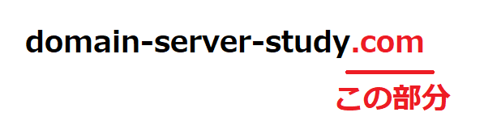
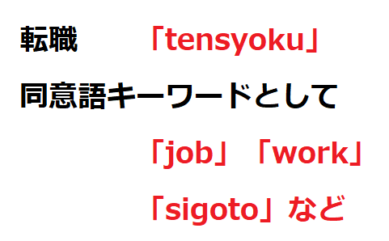
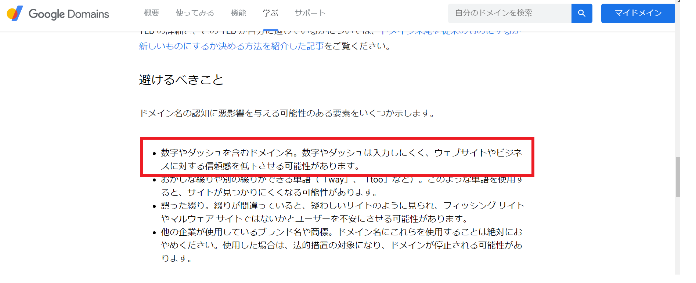

良いドメイン名の決め方 5つのアイディアで最適な独自ドメインを考えよう
独自ドメインは一度登録してしまうと、そうそう変えることが出来ません。そのため、どんなドメイン名にするか悩みに悩んでいる方
も多いと思います。
当ページではドメイン名を作るのに迷ってしまったとき、良いドメイン名を考えるためのヒントになるアイディアやサービスを紹介しています。
ドメイン名を考える5つのアイディア＆サービス
- ドメイン名ジェネレーターでヒントをもらう
- ドメインの種類を変える
- キーワードを略称化する
- 同義語を探してみる
- 有名サイトのドメイン名のケーススタディ
- 西暦や数字、ダッシュを入れるのは非推奨
１．ドメイン名ジェネレーターでヒントをもらう
最近ではドメインジェネレーターと呼ばれる、ドメイン名を自動的に生成してくれるWebサービスがあります。
ドメインジェネレーターの活用はとても簡単で、キーワードを入れるだけで関連したドメイン名をいくつも表示してくれます。
実際にドメインジェネレーターで「domain」と入れて検索した場合、以下のようなドメイン名が生成されました。
- thedomain.jp
- domain.press
- godomain.jp
- mydomain.jp
- domainer.jp
- account.biz
- buydomain.jp
自分では気が付かないネーミングセンスのあるドメイン名が一瞬で50個近く生成されましたので、
感想としてはこのドメイン名ジェネレーターに幾つかキーワードを入れれば、それだけでドメイン名が決められるヒントが貰えるのではないかと思います。
ドメイン名ジェネレーター
このドメイン名ジェネレーターはいくつか提供されているサービスがありますが、次に紹介するGoDaddy社のジェネレーターが良いでしょう。
GoDaddy社はアメリカでも有数のドメイン会社になります。
２．ドメインの種類を変えてみる
ドメインの種類というのは「.com」や「.jp」などの部分になります。
どうしても自分が取りたいドメインが取れない場合は「.com」や「.jp」などの人気ドメインを諦めて、
「.media」や「.shop」のような他の分野別ドメインにしてドメイン取得するという考え方になります。

2013年前後から分野別トップレベルドメインの数がものすごく増えていて、いまでは500種類近くが提供されています。
これだけ多くのドメインが提供されているので、例えば「domain」といった単一キーワードでも登録できる可能性があります。
「様々なパターンでドメイン名を考えてみたけど、どうしても「.com」「.jp」では希望のドメインが取得できない」ということであれば、
どんなドメインの種類があるのか調べてみて、自分にあいそうな種類のドメインで、ドメイン検索をしてみましょう。
なお、当サイトで考える有用性のありそうな分野別ドメインを紹介しておきます
- .shop：お店を意味するドメイン
- .media：メディア用のドメイン
- .inc：企業向けドメイン
- .tech：科学技術を表すドメイン
- .news：ニュースを表すドメイン
- .jobs：仕事を表すドメイン
→500種類を超える独自ドメインの種類を解説
３．同義語を探してみる
次に紹介したいのが「同義語キーワード」を探すこと。
例えば、人材や採用関係のサイトを作る場合であれば、キーワードとしてジョブ「job」、仕事「sigoto」、働く「work」といった同義語があります。
このように同じ意味の言葉を探して、それをベースのキーワードにしてドメイン名を考えていきます。

同義語検索サイトを活用する
同義語を探すには「類語辞典・シソーラス・対義語」の
ような同義語の検索サイトを利用しましょう。
４．キーワードを略称化する
場合によってはキーワードを略称化、簡略化することでドメイン名を作る方法もあります。
ただしキーワードの略称化すると言っても「Google」「メルカリ」のように造語を作るわけなので、ドメインを考える難易度としては
とても難しくなります。
これもWebサービスの助けを借りて、ドメイン名を検討すると良いでしょう。造語に役立ちそうなWebサービスは以下になります。
５．「西暦」や「数字」や「ダッシュ」を入れるのは非推奨
また、最近の傾向として「西暦」を入れたり「数字」を入れたりして独自ドメインを作るのは、あまりおすすめされていません
その他にも「-」ハイフンを入れるドメインも非推奨とされているようです。
あくまでも私の体感になりますが、特に英語圏のWebサイトではこの傾向が強いように思えます。
当サイトのドメイン名は「domain-server-study.com」となり、2つもハイフンが入っていますので、
残念ながらあまり良いドメイン名だとは言えないことになります。
Googleドメインでも「数字」や「－」は非推奨とされている
Googleが提供するドメイン会社である「Google domain」にはラーニングページでは以下のように避けるべきドメイン名を定義しています。

まとめ
検討したドメインは「ホームぺージURL」や「メールアドレス」になる
ドメインを一度作ると、それがホームぺージのURLになりますしメールアドレスにもなります。
会社用として作るのであればパンフレットやチラシなど様々な所でドメインが表記されることも考えられます。
その後何年も活用するものになるので、時間をかけて考えておきたい気持ちがあると思います。
一度考えたドメインはメモにしておくなりして、何日か経ってから改めて見直してみたり、
他の人に幾つか見せて意見を聞いて見るのもいいかもしれません。
ドメイン名は検索順位には影響しない
どんなドメイン名であってもドメイン名の良し悪しによって、検索結果の順位に影響が出ることはないと思っています。
どんなドメイン名であっても検索順位に影響するのはドメイン名ではなく、ホームぺージの中身だと思ってください。
内容があるサイトであれば日本語ドメインのようなドメインでも検索エンジンで上位表示されます。
実際に価格.comが運営している、転職サイト「求人ボックス」のドメインは日本語ドメインになっていますが、
Googleから多くのアクセス数を集めています。
ドメイン会社は「お名前ドメイン」がベスト
ドメイン名が決められない時は「お名前ドメイン」で登録してみましょう。
登録できるドメインの種類が500種類を超えているため、自分にあったドメイン名で登録することが出来ます。
→お名前ドメインの解説はこちら
独自ドメインをさらに勉強する
ドメインにはメリット・デメリットがあります。「Whois情報」など個人情報が開示される制度もあります。
いろいろ覚えておいた方が良い知識がありますので、ドメイン名を登録をする前に知っておきましょう。
この記事の著者・プロフィール
Web制作を始めて約19年になります（HTML/css、Photoshop、Webマーケティング）。2005年から当サイトの運営を開始。
これまでに300個以上のドメインを取得、10社を超えるレンタルサーバーを利用してきました。